#MidCamp
R.E.A.D /
Michael Miles
R.E.A.D
How to select the right modules.
https://2015.midcamp.org/node/34
MidCamp 2015
#MidCamp
Who You Are
- New to Drupal
- Want to re-enforce habits
Your Role.
- Site Builder/Architect
- Developer
- Decision Maker
What it is all about.
How to quickly make smart, informed decisions.
What we will cover.
- Steps to decide between a contrib, patched or custom module.
- Basics of patching.
- Basics of writing/contributing a module.
Michael Miles
From: Boston, MA ..a.k.a Planet Hoth
Work: Genuine (@WeAreGenuine)
Exp: Working with Drupal since 2008.
Recently named an Acquia M.V.P
Twitter: @mikemiles86
Drupal.org: mikemiles86
All the Places: mikemiles86
R.E.A.D
- Research what exists.
- Evaluate the options.
- Analyze the gap.
- Determine amount of change.
Research What Exists

Isolate Keywords.
- Read documentation, specs, etc...
- Pay attention to nouns and verbs.
- Ask questions!
Perform Searches.
- Use search on Drupal.org
- Use search engine "Drupal [keyword]"
Utilize the Community.
- Use IRC: #drupal, #drupal-support
- Use Stack Exchange: drupal.stackexchange.com
- Even reddit! reddit.com/r/drupal
Evaluate the options.
Read the description
- What does the module do?
- What does the module not do?
- What does the module depend on?
Community adoption
- Downloads vs. Installs vs. Age
- Contribute to issue queue?
Maintainer Activity
- Participate in issue queue?
- Regular commits?
- Regular releases?
Analyze the Gap.
Download and test the module.
- Use a sandbox: simplytest.me
- How easy is it to use?
Discover missing functionality
- What's offered out of the box?
- What do I still need it to do?
Check for community solutions
- Check the issue queue
- Research what exists.
- Utilize the community.
Determine Change.
Review the module code
- Does it follow coding standards?
- Is it easy to understand?
- Is it extendable?
Estimate Effort.
- How much code to rewrite?
- How much code to alter?
- How much time is there?
Extend or Alter?
- Adding functionality?
- Changing functionality?
Examples
Scenario #1
The Requirements
WHEN SAVING A FILE ENTITY
AND IT IS A JPEG IMAGE
THEN THE EXIF META DATA NEEDS TO BE CAPTURED
AND MAPPED TO CUSTOM FIELDS
AND THESE MAPPINGS NEED TO BE EXPORTABLE USING FEATURES
Research What Exists.
Isolate keywords
WHEN SAVING A FILE ENTITY
AND IT IS A JPEG IMAGE
THEN THE EXIF META DATA NEEDS TO BE CAPTURED
AND MAPPED TO CUSTOM FIELDS
AND THESE MAPPINGS NEED TO BE EXPORTABLE USING FEATURES
Perform Search
We will focus on the keyword "Exif"
Search Google
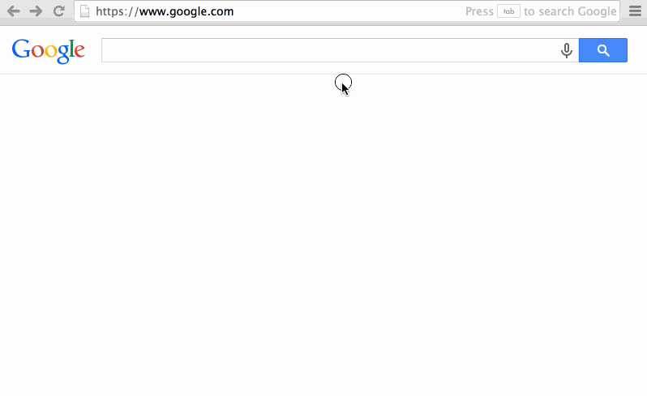Utilize the Community
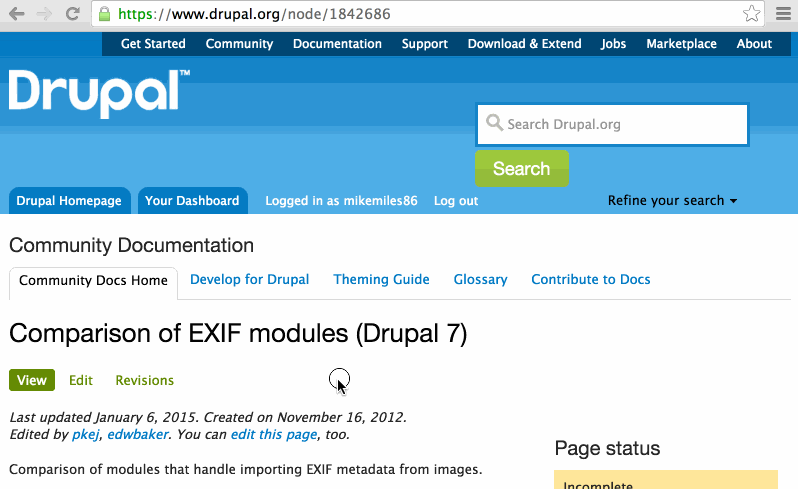Evaluate the Options.
Exif custom seems like best fit.
Read the Module Description
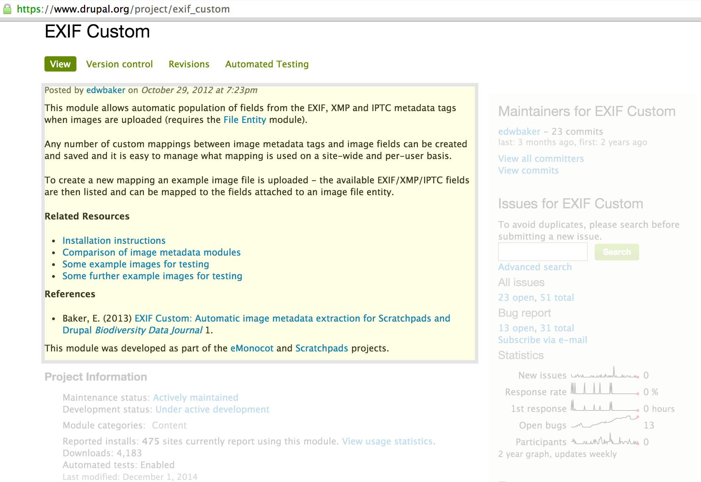Look at Community Adoption.
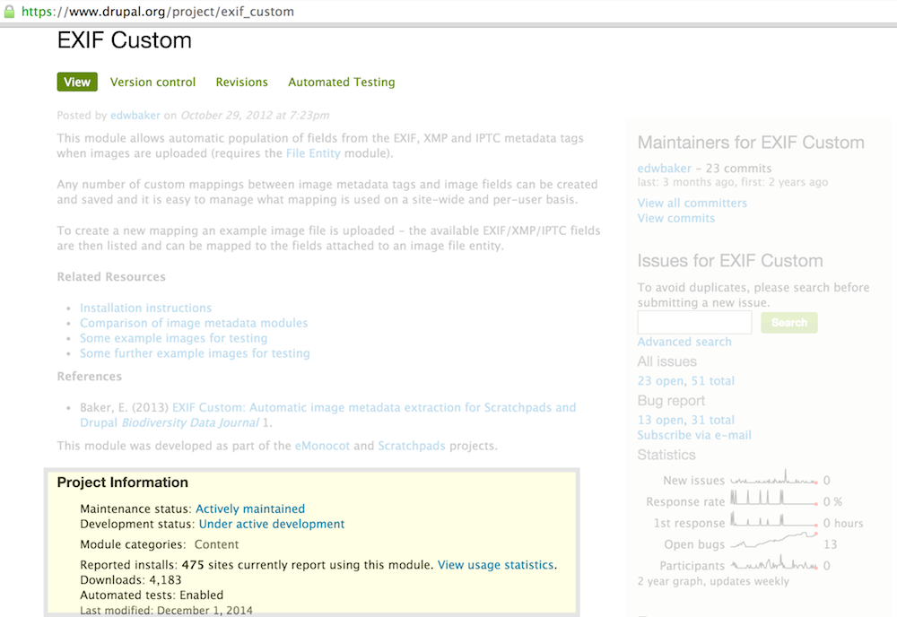Look at Maintainer Activity
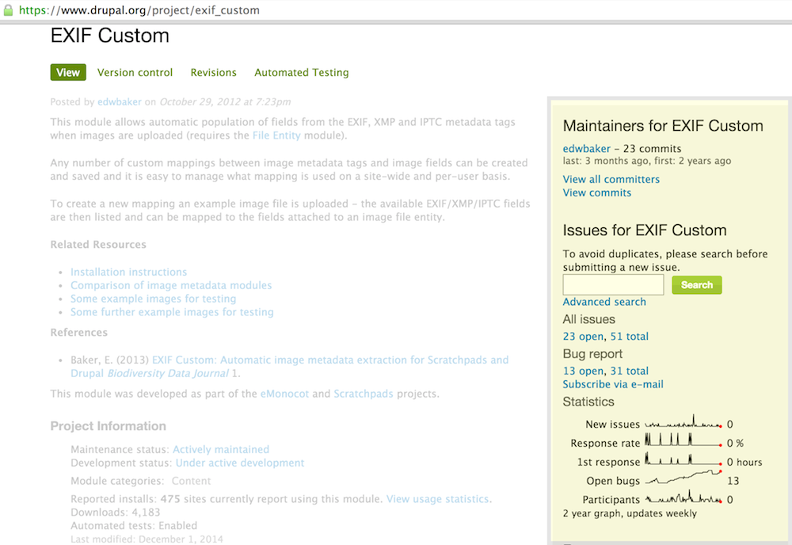Analyze the Gap.
Download and test the module
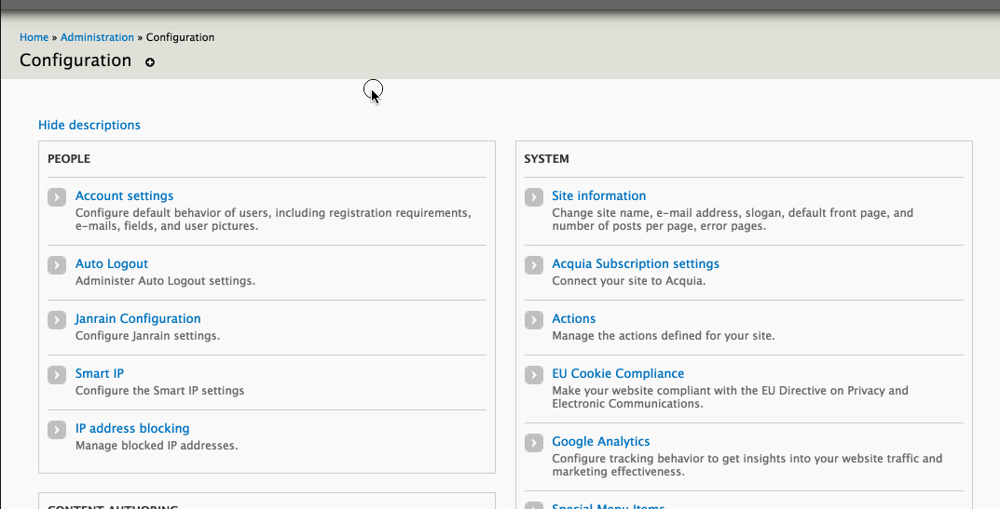Discover missing functionality
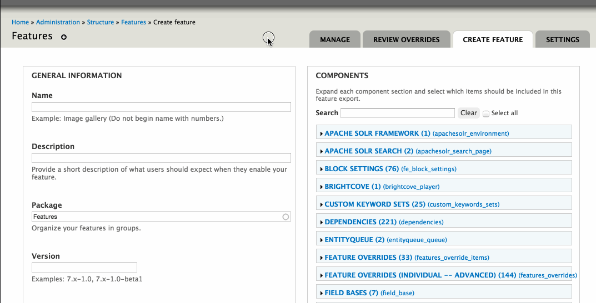Check for solutions
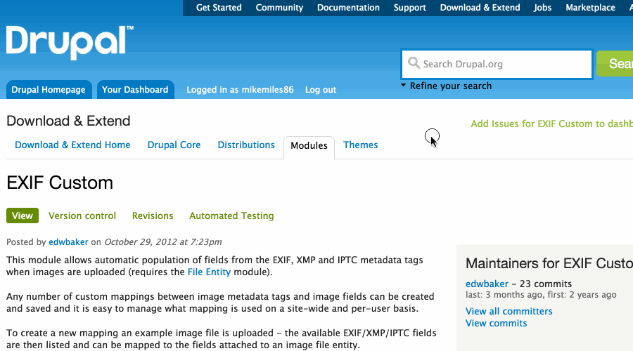Determine change
Review Code.
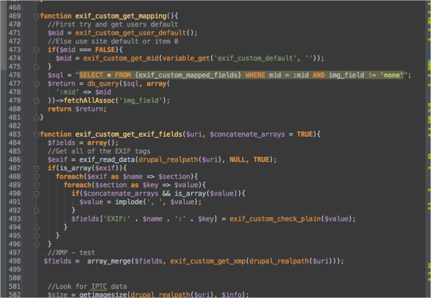Estimate Effort
- Add Features integration.
- Alter primary key for mappings
- Time is minimal
Extend or Alter?
- Extending, adding features support.
Which path to choose?
- Use module as is.
- Patch module.
- Write own module.
Patch!
- Module meets 90% of needs.
- Small gap, small effort.
- Extends module
What is a Patch?
- A structured list of changes.
- Appliable to files.
- Focused on a single change.
- drupal.org/patch
Creating a Patch
Clone and branch Module Git Repo.
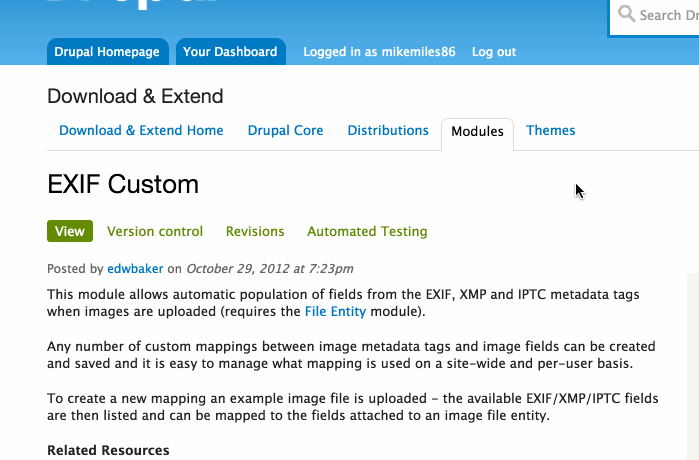Make changes to code.
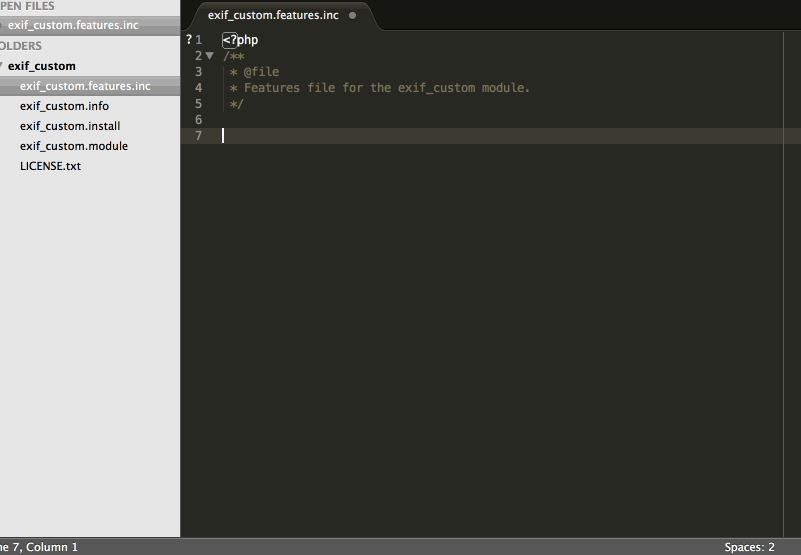Test changes.
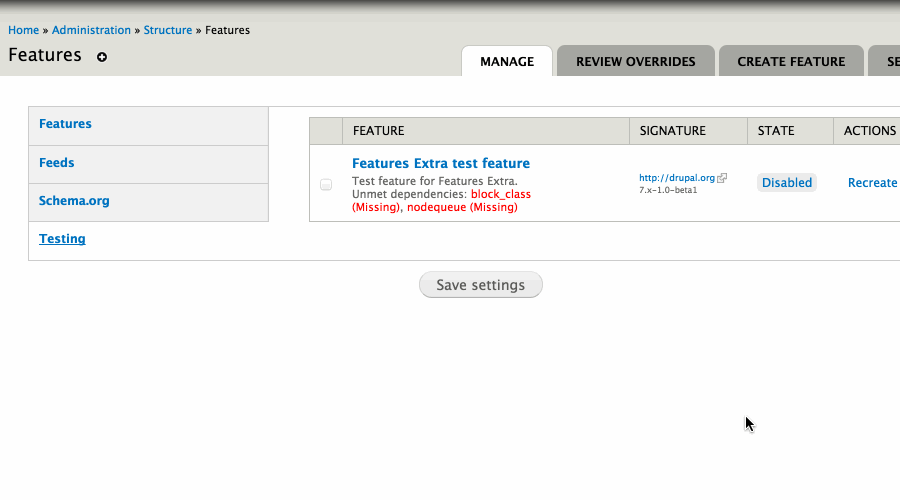Create Patch
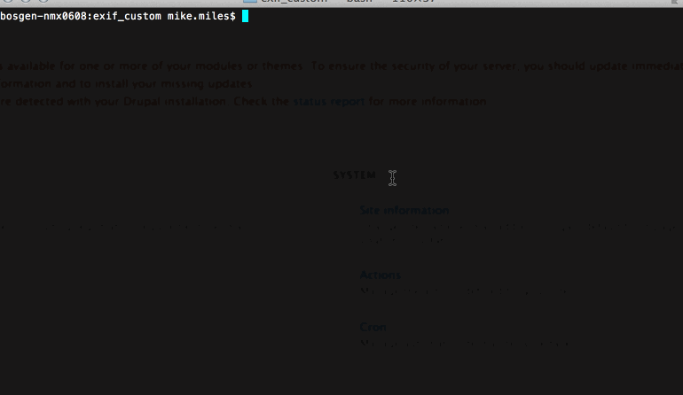Submitting a Patch
Create/Comment Issue Queue
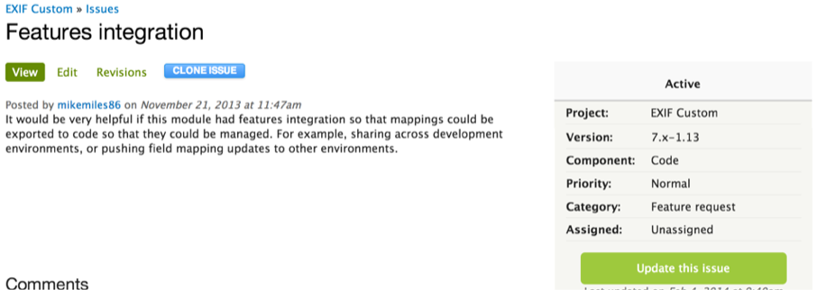Attach Patch
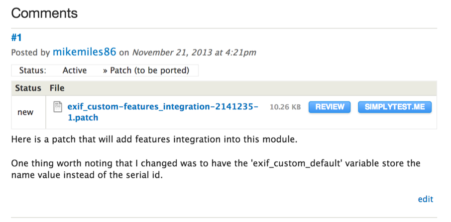
Follow patch naming standards
[module]-[description]-[issue-number]-[comment-number].patch
Watch for Feedback
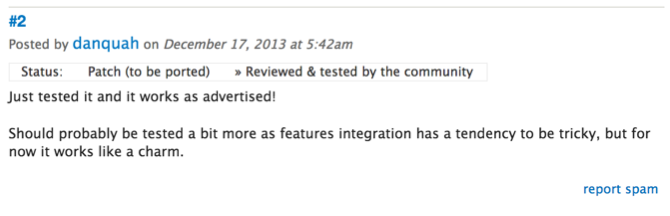Wait for Merge.
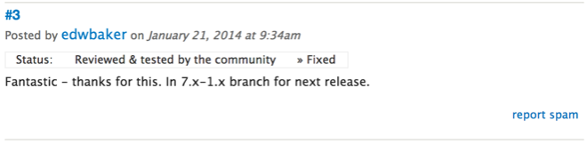Giving back to the community.
Scenario #2
The Requirements
WHEN SITE USES WORKBENCH TO MODERATE CONTENT
THEN CAN CREATE MULTIPLE TRANSITIONS BETWEEN STATES
AND TRANSITIONS ARE EXPORTABLE USING FEATURES
WHEN EDITNG A CONTENT REVISION
THEN CAN SCHEDULE A TRANSITION
AND CAN SELECT DATE FOR FIRST STATE
AND CAN SELECT DATE FOR SECOND STATE
Research What Exists.
Isolate keywords
WHEN SITE USES WORKBENCH TO MODERATE CONTENT
THEN CAN CREATE MULTIPLE TRANSITIONS BETWEEN STATES
AND TRANSITIONS ARE EXPORTABLE USING FEATURES
WHEN EDITNG A CONTENT REVISION
THEN CAN SCHEDULE A TRANSITION
AND CAN SELECT DATE FOR FIRST STATE
AND CAN SELECT DATE FOR SECOND STATE
Search for existing modules.
We will focus on the keywords "workbench schedule"
Search Drupal

Evaluate the Options.
Look at Scheduler Workbench Integration.
Read the Module Description
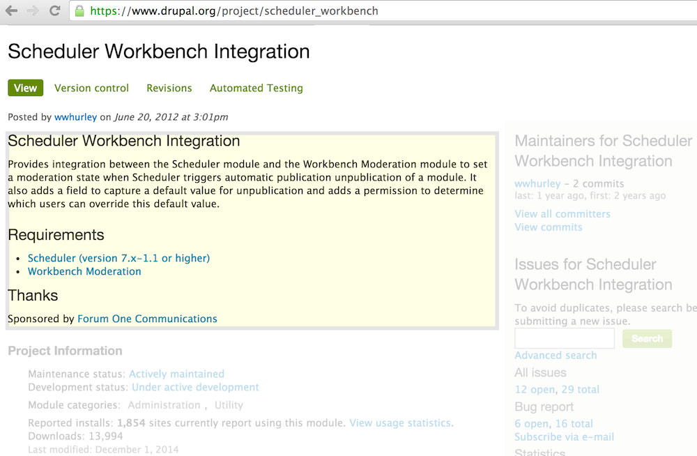Look at Community Adoption.
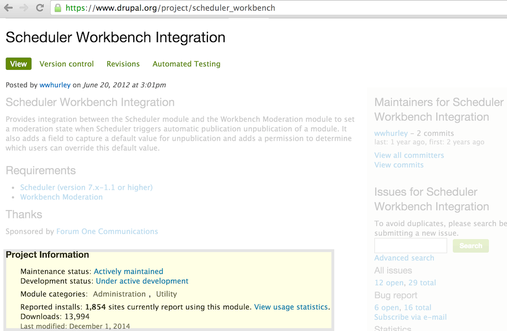Look at Maintainer Activity
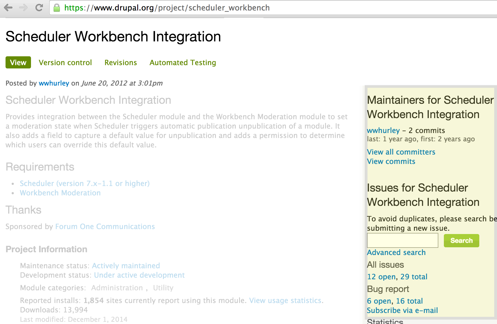Analyze the Gap.
Download and test the module
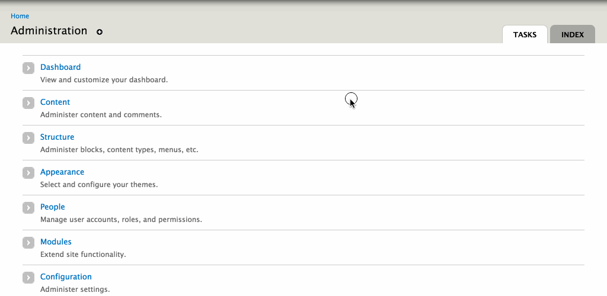Discover missing functionality
- Unable to create different transitions per type.
- Uanble to select per revision.
- No features support
Determine change
Review Code.
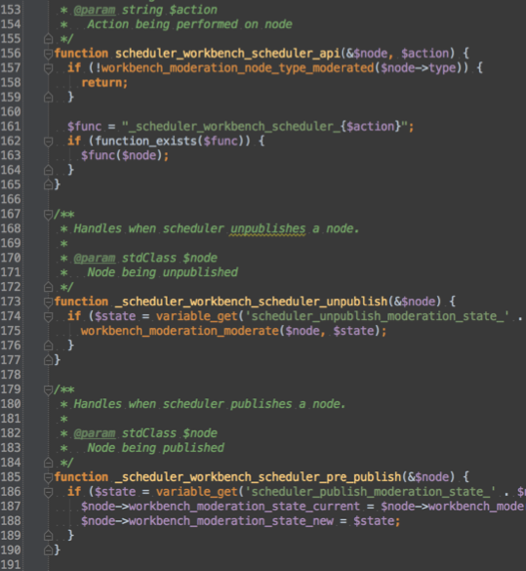Estimate Effort
- Build ways to create multiple transitions
- Build ways to schedule transitions
- Add Features integration.
Extend or Alter?
- Change how transitions are created.
- Change how schedules are stored.
Which path to choose?
- Use module as is.
- Patch module.
- Write own module.
Build Custom Module!
- Would alter existing module.
- No other module exists to support use cases.
- Too big/complicated to be a patch.
Writing a Module.
- Follow Drupal coding standards.
- Make use of hooks and APIs.
- Test your code!
- drupal.org/developing/modules
Contributing a Module
Ask yourself one question:
Could others use this?Seriously, is it abstracted enough?
Name Appropriately
- Namespace accordingly.
- Be clear.
Provide Detailed Description
- Explain what module does
- Explain what modules does not do
- Outline dependencies
Be a good maintainer.
- reviews bugs and feature requests
- Accept community support
It's Free QA People!
Let's review.
Remember to R.E.A.D
- Research what exists.
- Evaluate the options.
- Analyze the gap.
- Determine amount of change.